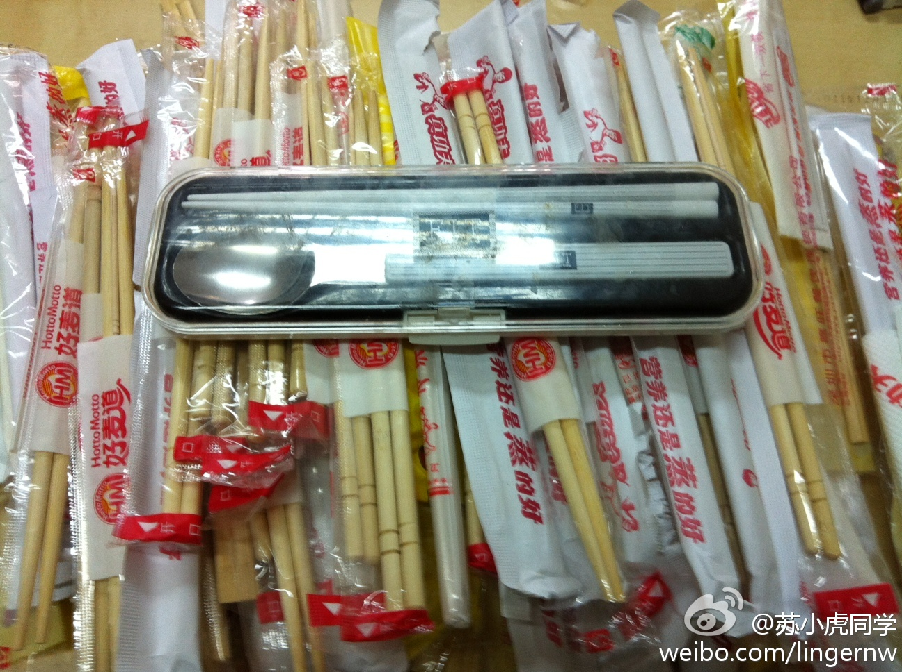

吃盒饭有这么苦难吗？@苏小虎同学:去年国庆期间买了便携筷子，从此再叫送餐，都会把一次性筷收藏，天天加班很快就破百。我梦中的杀手锏是和VC谈卖身契僵持时刻，拿这些筷子砸他们脸上，让他们明白创业者经历多少苦难。但这个计划已经放弃了，因为我现在更忙，只能改吃Subway,哈哈，生活真的妙不可言，特此纪念。 
请正常！不过说起来尤文是个上市公司，它上市十年股价一路狂跌，仙子啊股价只剩刚开始的1/17。。。 //@Apache9: 这位FB大鳄，FB上市了您入股贵黼给买个打鸣仔前锋吧//@斯图亚特9: 这场比赛我看了！尤文锋无力竟然需要皮队来救赎……真是悲哀啊。//@Apache9: 转发微博@米core:old soldiers never die! 队长威武！
多少年来，一直听说一种说法，如果不上大学的话，上普通高中没意义。最近推敲起来，觉得未必如此。在这个全球化、危机重重、日新月异的时代，对普通劳动者的要求也已经超越基本劳动技能了。有足够的阅读能力、科学素养和知识储备，有助于国民学习新知识，理解世界复杂的新变化，是很必要的长远投资。
 网页链接 好像挺汗的……
网页链接 好像挺汗的……